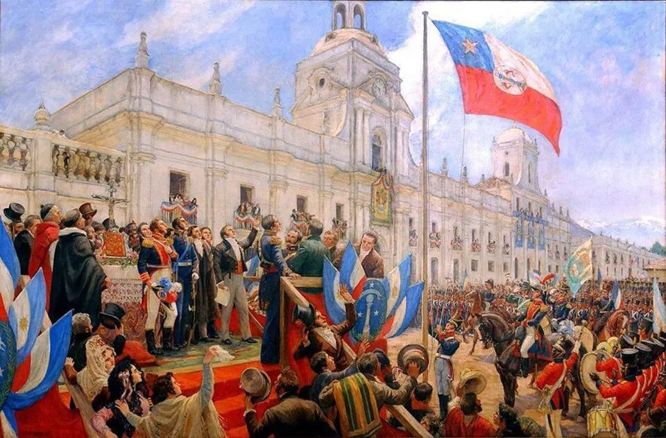

Proclamación de la Independencia

Tras el triunfo en Chacabuco (Cruce de los Andes y Batalla de Chacabuco), el gobierno de Bernardo O'Higgins resolvió declarar formalmente la independencia, algo que la Primera Junta y la Patria Vieja no habían hecho. A fines de 1817 se abrieron registros en las ciudades para que los vecinos manifestaran su opinión, y el resultado fue favorable. El Acta de la Independencia declara que el territorio de Chile y sus islas forman un Estado libre, independiente y soberano, separado para siempre de la monarquía española.
La ceremonia solemne se realizó el 12 de febrero de 1818, primer aniversario de Chacabuco, en Santiago, donde presidió el director delegado Luis de la Cruz, y en Talca, donde O'Higgins se encontraba con el ejército. El contexto era tenso: una nueva expedición realista al mando de Mariano Osorio había desembarcado en Talcahuano y avanzaba desde el sur. Poco después, el 19 de marzo, los patriotas fueron sorprendidos en Cancha Rayada, cerca de Talca, y la independencia solo quedó asegurada con la Batalla de Maipú. El reconocimiento internacional llegó en las décadas siguientes; España reconoció a Chile en 1844.
Versión para niños
Un año después de la victoria de Chacabuco, Chile anunció al mundo que era un país libre e independiente. El documento que lo dice se llama Acta de la Independencia y lo firmó Bernardo O'Higgins, el Director Supremo, en la ciudad de Talca. El 12 de febrero de 1818, la independencia se proclamó y se juró con ceremonias, campanas y celebraciones en Santiago y en Talca, donde O'Higgins estaba con el ejército.
Para maestros
Nivel sugerido: 6° básico
Objetivo: Distinguir entre la formación de la Primera Junta (1810) y la declaración formal de la independencia (1818), y analizar el Acta como fuente histórica. Conviene explicar que el documento tiene tres momentos y tres lugares: el acta se fechó en Concepción el 1 de enero de 1818, cuando O'Higgins dirigía allí la campaña del sur; luego O'Higgins la firmó en Talca, adonde se había replegado con el ejército ante el avance realista; y finalmente se proclamó y juró solemnemente el 12 de febrero de 1818, aniversario de Chacabuco. Por eso distintas fuentes asocian la independencia a Concepción, Talca o Santiago, y todas tienen parte de razón.
Preguntas para la clase:
- ¿Por qué Chile celebra el 18 de septiembre si la independencia se declaró en 1818?
- ¿Por qué el acta tiene una fecha y un lugar distintos a los de su proclamación?
- ¿Qué significaba en 1818 que Chile fuera un Estado libre, independiente y soberano?
Actividad (20–30 min): Lectura guiada de un fragmento del Acta de la Independencia, disponible en Memoria Chilena o en la Biblioteca Nacional Digital. Los estudiantes subrayan palabras clave, explican con sus palabras qué se declara y ubican en un mapa Concepción, Talca y Santiago, anotando la fecha que corresponde a cada una.
Fuentes sugeridas: Memoria Chilena; Biblioteca Nacional Digital; Museo Histórico Nacional; Biblioteca del Congreso Nacional (BCN).
Objetivos de Aprendizaje (Currículum Nacional)
- 6° básico · HI06 OA 02 Explicar el desarrollo del proceso de independencia de Chile … las batallas de Rancagua, Chacabuco y Maipú, y la Declaración de la Independencia
- 8° básico · HI08 OA 16 Explicar la independencia de las colonias hispanoamericanas como un proceso continental … y analizar en este marco el proceso de Independencia de Chile
- 8° básico · HI08 OA 19 Evaluar las principales transformaciones y desafíos que generó la independencia de Chile, como la conformación de un orden republicano
Personajes
Revisión humana pendiente. Cómo se revisa · Reportar un error
Cómo citar: Historia de Chile. (2026). Proclamación de la Independencia. En Historia de Chile: atlas y línea de tiempo. https://moises-salgado.github.io/historia-de-chile/momento/proclamacion-de-la-independencia.html